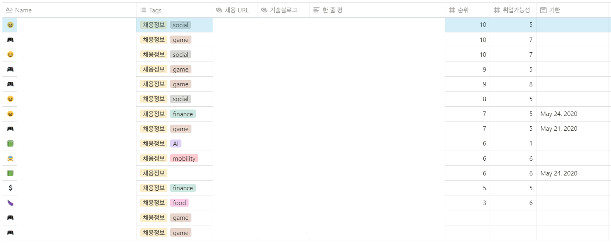

데이터 분석가로 취업을 하려면 다섯 가지를 준비하자.
- 마냥 취업만 하면 된다는 생각에 이곳 저곳 찌르고 계신 (저와 같은) 분 없나요? 그렇다면 이 글을 추천합니다.
저는 이곳 저곳 찌르다 돌고 돌아 이제 1년 차 게임 회사의 데이터 분석가로 근무하고 있습니다. 취업 준비로 마음 고생하시는 분들에게 많은 도움이 되길 바라며 이 글을 씁니다.
이 글을 쓰게 된 계기
다른 분들도 취업하기까지 어려움을 많이 겪었고, 혹은 겪고 계시겠지만, 저 또한 제 생각보다 오래 취업 준비를 했습니다. 대학교 졸업 때 즈음 1년 반, 대학원 졸업 후 반 년하여 총 2년이라는 시간이 걸렸네요.
많은 시행착오를 겪었기 때문에 환생을 한다면 2년보다는 짧은 취준 기간을 가지지 않을까 생각하고 있습니다.
그리하여 다른 분들에게도 조금의 도움이라도 드리고자 이 글을 쓰게 되었습니다.
취업을 하기 위한 다섯 가지 준비
데이터 분석 능력을 갖추었는지 확인하자
데이터 분석 능력은 회사마다 요구하는 역량이 다르겠지만,
제가 느끼기에 데이터 분석가로써 "많은 고도화된 딥러닝 / 머신러닝 분석 방법을 아는 것"보다 "한 가지 (쉬운) 분석 방법이라도 제대로 분석할 수 있는 능력"이 중요하다 생각합니다.
제대로 분석할 수 있다는 것은 아래와 같은 능력을 갖췄는지를 의미합니다.
- 원천 데이터로부터 원하는대로 데이터를 가공하여 추출할 수 있는지? (SQL / Spark)
- 시각화 / 분석을 통해 인사이트를 찾을 수 있는지? (태블로 / R / Python)
- 인사이트를 바탕으로 의사 결정 사안을 전달할 수 있는지? (스토리텔링)
특히 "인사이트"라는 영역이 무궁무진하고, 이를 바탕으로 어떤 의사 결정 사안까지 만들어내는 것은 매우 어려운 작업이지만, 분석가로써 꽤나 필요한 역량입니다.
예를 들어, 특정 월에 A그룹과 B그룹 간의 접속률 차이가 많이 났다면 왜 그런지 이유를 파악하고, 이로 인해 어떤 액션을 취할 수 있을지까지 하나의 스토리가 만들어져야 합니다.
또한 복잡한 알고리즘보다 단순하지만 파워풀한 알고리즘을 선호하는 경향이 있기 때문에 많은 분석 방법을 아는 것이 큰 도움이 되지 않을 수 있습니다.
추천을 예로 들면, 추천 시스템을 통해 구현한 결과와 룰셋을 기반으로 유저를 타겟팅하여 추천을 했을 때의 결과를 비교했을 때 큰 차이가 없다면, 후자를 선호할 것입니다.
왜냐하면 룰셋은 적어도 “왜” 이렇게 추천되었는지 명확한 반면, 추천 시스템은 이를 설명하기가 어렵기 때문이죠.
물론 분석 시 새로운 방법들을 배우고 접하기 때문에 많이 알고 있다고 하여 마이너스가 되는 것은 아니지만, 결과적으로 더 중요한 것은 “제대로” 분석하는 것이라 생각합니다.
이를 연습하기 위해선 공모전 과제 (단순 예측에서 끝나지 않고 어떤 의사결정 과정까지 갈 수 있는 공모전)나 블로그에 개인적으로 분석한 것들을 글로 녹여내는 연습을 하는 것이 좋다 생각합니다.
또한, 데이터 분석가 포지션에서 종종 분석 과제를 던져주기 때문에, 데이터 분석 능력은 취업 전에도 필요한 요소입니다.
현재 다니는 회사에서는 면접 전에 일주일 간 기간을 주고 과제를 제출해야만 했었고, 그 외 두 회사에서 데이터 분석가 포지션으로 지원했을 때도 약 5시간 가량 현장 과제를 하기도 했습니다.
전자는 그래도 최대한 준비가 가능할텐데 후자처럼 현장에서 분석 과제를 던져주면 엄청 당황하게 됩니다.
제가 봤던 통신사 데이터 분석가 포지션 과제의 경우, 현장에서 데이터 소스 6개 정도 주고 5시간 동안 자유 주제로 분석을 해보는 것이 과제였습니다.
데이터 컬럼에 대한 설명 및 정보와 짧은 지문들이 있었지만 결과적으로 긴급하게 보고한다면 무엇을 보고할래? 이런 느낌이었던 것으로 기억합니다.
이 과제를 던져준 이유를 생각해보면,
- 테이블 간의 관계를 따져서 조인을 잘 하고 가공할 수 있는지
- 주제를 잘 세우고 인사이트를 뽑아낼 수 있을지
가 가장 컸던 것 같습니다.
제 경우 데이터를 분석하고 보고서를 만들기까지 시간이 촉박해서 단순한 나무 모형을 썼었고, 어떻게 해석하고 이런 것들을 더 분석할 수 있고 이런 인사이트가 있었다는 것을 뽑아 과제를 제출했습니다.
운이 좋게도 과제에 합격했고요! 다른 분들을 봤을 때 보고서를 완성시키지 못하면 합격하지 못했던 것 같습니다.
어딜, 왜 가고 싶은지 우선 순위를 매기자
결과론적인 생각일지는 몰라도 “나에게 맞는 회사” 혹은 "나를 원하는 회사"는 정해져 있다 생각이 듭니다.
전 게임 회사에 다니는데, 한 친한 동료분이 "OO님은 공기업같은 딱딱한 곳 못 가고 여기가 딱인 것 같다"는 말씀을 했을 때 뜨끔했던 적이 있습니다.
생각해보면 저는 문서의 글씨체가 "굴림체"와 같은 기본 글씨체여도 싫어하고, 이것 저것 배우고 적용하는 성격이라 수직적이고 위계적인 곳은 전혀 어울리지 않는 것 같습니다.
그럼에도 불구하고 첫 취준 때는 “남들이 다 쓰는” 대기업 이곳 저곳을 찌르며 지원했고, 결과는 그리 좋지 않았습니다.
따라서, 나의 직장 선호도를 잘 파악하여 노력을 분배하는 것이 전략적으로 더 좋다 생각합니다.
이를 위해 저는 어떤 직장을 왜 갖고 싶은지 우선 순위를 매기고, 이 우선 순위에 따라 노력을 분배했었습니다.
진로를 선택하는 데 있어 변성윤님의 성장을 좋아하는 사람이 성장하고 싶은 사람에게 PT를 비롯해 여러 조언들로 많은 도움을 받았습니다.
이를 통해 가고 싶은 회사의 우선순위를 아래와 같은 기준을 통해 정할 수 있었습니다.
- 산업군
- 회사 내의 데이터 관련 부서의 중요도
- 워라밸 (Work & Life Balance)
- 연봉
- 분위기
- 구체적으로 하는 일
- 회사 네임 밸류

이 기준들 사이의 우선순위를 정하긴 어려워서 아래처럼 회사 공고마다 한줄평, 가고싶은 회사의 순위, 주관적으로 생각하는 취업가능성을 적어 Notion 앱에 정리했습니다.
그리고 이 회사를 가고 싶은지 아려면 최대한 무슨 일을 하는 지 알아야 하기 때문에 기술블로그도 있다면 살펴보고 정리했습니다.
취업 준비를 하는건 힘들고 귀찮은 일이지만, 동시에 설렐 필요가 있다 생각합니다. 마치 여행 계획을 짜듯이
- 내가 가고 싶은 여행지를 선택하듯 회사를 고르고
- 명소, 맛집들을 정리하듯이 회사에 들어가 할 일들을 찾다보니
**“생각했을 때 설레는 회사 = 제가 가고 싶은 회사“**로 선택지를 추릴 수 있었습니다.
자기소개서 / 포트폴리오는 잘 써놓고 우려먹자 (?)
인사 담당자 혹은 실무자들이 수많은 서류를 보면서 어떤 서류를 뽑게 될까요?
저는 이 두 가지가 중요하다 생각합니다.
- 정성이 가득 담긴 글
- 어떤 말을 하려고 하는지 명확한 글
정성은 참 애매하죠. 노오-력만 하면 된다는 꼰대 느낌이 살짝 나지만 정성을 어떻게 보여줄 수 있을까 정의를 해보았습니다.
- 최소한 취업 설명회에 참석하거나 직접 기업탐방을 하거나, 회사 기술 블로그를 통해 어떤 일을 하는지 살펴보고 회사의 “어떤 점이 맘에 들어서” 지원하였는지 지원동기에 녹여준다.
- 포트폴리오가 필수는 아니지만 제출할 수 있다면 무조건 제출한다. (10장 내외)
- 회사에서 관심있을 법한 분야가 있다면 이를 공부하고 어딘가에 정리한다. 그리고 이를 자기소개서에서 티낸다.
두번째로 어떤 말을 하려고 하는지 명확한 글이 중요한 이유는 눈에 띠어서이기도 하지만, 회사에서의 지원자의 스토리텔링 능력을 예견해주기 때문이라고 생각이 듭니다.
앞에서 분석가로써 인사이트를 찾고 스토리텔링을 하는 능력이 중요하다 말씀드렸듯이, 자기소개서에서
- 자기가 어떤 사람이고
- 자기가 어떤 일을 했는데 그것을 통해 어떤 것을 배웠는지
명확하게 보이는 글을 쓰는 사람이라면 실제로 일을 할 때도 명확하게 자신이 전달하고 싶은 바를 전달할 수 있을 것 같다 여기지 않을까요?
백지부터 시작하는 자기소개서를 쓰기는 어려우니, 한 번 자기소개서를 잘 써놓고 데이터를 업데이트해나가는 것이 필요할 것 같습니다.
저는 서류 합격률은 좋았던 편인데, 이렇게 쓰려고 노력했습니다.
- 눈에 띠는 형식을 적극 사용하자.
- 소제목 및 문단 나누기: 문단을 나눌 때 문단의 첫 단어에 띄어쓰기를 하기 보단, 엔터를 쳐서 "나 문단이다"라고 보여줄 수 있도록 했습니다. 심지어 엔터를 두 번 쳐서 문단 간의 간격이 벌어지도록 한 적도 종종 있었습니다.
- 불렛 (bullet) 사용하기: 제가 지금 쓰고 있는 이 글처럼 불렛을 많이 사용하여 나열식인 내용을 잘 구분할 수 있도록 했습니다.
- 중요한 단어는 따옴표 (“”)로 강조하기
- 무조건 두괄식으로 문단에 있는 내용을 다 포함하자.
- (Bad) 저는 ~ 경험을 했습니다.
- (Good) 저는 ~ 경험을 통해 ~을 배울 수 있었습니다.
- 경험을 서술한다면, 잘 연관은 안 되겠지만 회사와 연관시켜보자.
- Ex. ~ 회사에서도 ~ 기술을 사용하기 때문에 이 경험을 살려 ~에 도움이 되도록 노력하겠습니다.
포트폴리오도 마찬가지입니다. 포트폴리오는 자기소개서와 달리 정말 “제 맘대로” 구성을 할 수가 있어서 자유도가 높은 편인데요.
제 경우는 보통 이렇게 구성했습니다
- 제 소개: 분석 툴 활용 능력 (게임 회사 지원 시에는 게임 경력도 넣어서 "저는 이런 게임 유저다"를 소개하기도 하였습니다)
- 논문 소개
- 프로젝트 1
- 프로젝트 2
- 프로젝트 3
이렇게 한 번 잘 만들고 나니 제출할 때마다 회사의 로고를 바꿔주고 활용 능력에 대해 회사에 더 핏하게 바꿔주는 정도?로만 수정했던 것 같아요.
면접은 내 서류 / 과제 기반으로 예상 질문을 만들자
면접 질문은 회사 바이 회사이긴 하지만 항상 공통으로 받았던 질문은 이거였습니다.
- 랜덤 포레스트 설명해보세요.
이게 갑자기 왜 나왔을까요? 제가 썼던 자기소개서마다 공모전 얘기를 빼놓을 수 없었는데 거기서 썼던 모형이 랜덤 포레스트였기 때문입니다.
이렇게 실력을 검증할 때 공모전을 했어도 “얘가 알고 썼는지, 그냥 모르지만 예측력이 좋아서 썼는지” 판별하기 위해서 이러한 질문을 던지는 것 같습니다.
그 외에도 제가 했던 프로젝트 하나하나마다 꼼꼼하게 물어보는 회사도 있었습니다.
프로젝트 구성원들을 각각 A,B,C,D라 할 때 각자 어떤 업무들을 맡았는지, 프로젝트 내에서 제 역할은 무엇이었는지 여쭤보았습니다.
의도는 경력 검증과 더불어 팀원들과 프로젝트를 할 때 팀워크를 잘 발휘하는지를 보는 듯한 느낌이었습니다.
이처럼, 제 서류에서 분석과 관련해 어떤 경력을 기술했는지에 따라 질문을 많이 하는 것 같습니다.
그리고 앞서 말한 것처럼 분석 과제를 제출한 후에 면접이 잡혔다면 높은 확률로 면접에서 과제에 대한 질문을 중점적으로 합니다.
과제와 관련한 면접이라면 이런 것들을 보통 물어봅니다.
- 과제 발표 (한 15분)
- 왜 이 방법을 썼는지?
- 이 방법은 이러이러해서 한계가 있을 것 같은데, 다른 방법을 고려한다면 어떻게 할 수 있을지?
- 시간이 더 많다면 어떤 걸 더 고려해볼 것 같은지?
그 외에도 분석가로써의 소양을 볼 수 있는 통계 질문도 좀 있었습니다.
제가 베이지안 통계학 석사여서 그런지는 몰라도 베이지안 통계를 초등학생한테 설명한다면 어떻게 설명할지 물어보는 곳도 있었고,
중심 극한 정리, 다중공선성과 같은 정의를 물어보는 곳도 있었습니다.
아! 그리고 빅데이터 정의를 물어보는 곳도 있었네요 ㅋㅋㅋㅋ 4V 하는 순간 망하는 것 같습니다. 왜냐면 V가 뭘 뜻하는지 안 외우고 있어서…
자기 소신껏 생각하는대로 정의했더라면 더 좋은 결과를 얻을 수 있었을 것 같아요.
가장 중요한건 마인드 셋!
맞습니다. 가장 중요한건 제 마음가짐입니다.
저는 이제껏 제가 긍정적인 사람이라고만 믿어왔는데 취업 실패로 인생에 가장 큰 좌절감을 느꼈고, 현재도 많은 고민을 하며 흔들리고 있는 자아를 갖고 있어서 "매사에 긍정적이다"라는 생각이 깨지는 것 같아요.
그래도 어떤 계기로 제가 무너졌을 때마다, 다시 일어나려 노력하고 더 나은 방향으로 마음을 다 잡아보려 안간힘을 쓰는 것이 중요합니다.
다시 일어날 힘조차도 없을 땐, 가까이 있는 사람에게 힘들다고 터놓으며 마음을 달래기도 하였고, 같이 연간 계획을 세우면서 계획을 향해 노력했어요.
이렇게 마음이 힘들 땐
- 왜 마음이 힘든지
- 어떻게 하면 마음이 달래질 것 같은지
이 두 개를 중점적으로 파악해서 막연한 불안감을 해소하고 일어서는게 필요하다 느꼈습니다.
언제나 좋은 일만 일어날 순 없기 때문에, 안 좋은 일이 일어났을 때 "왜 나에게만 이런 일이 생기나"라 원망하기보단 "이럴 수도 있지. 다음 해에 운수대통인가보다"라고 자신을 위로하는 게 필요하다 느낍니다.
이 글을 보신 분들이 모두 원하시는 바를 이루길 바라며! 이 글을 마칩니다.